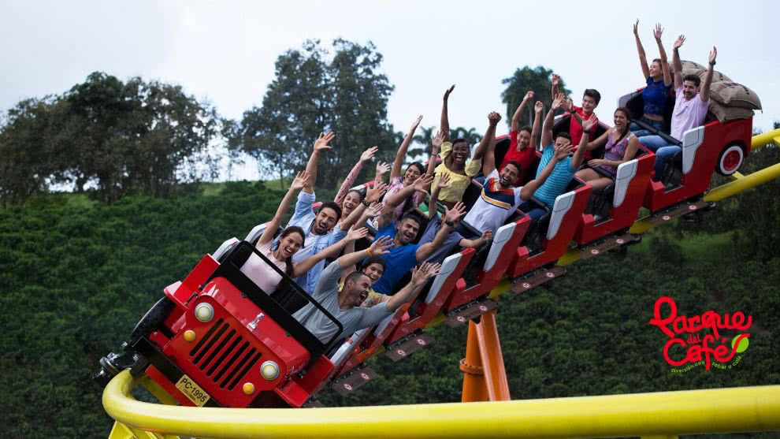
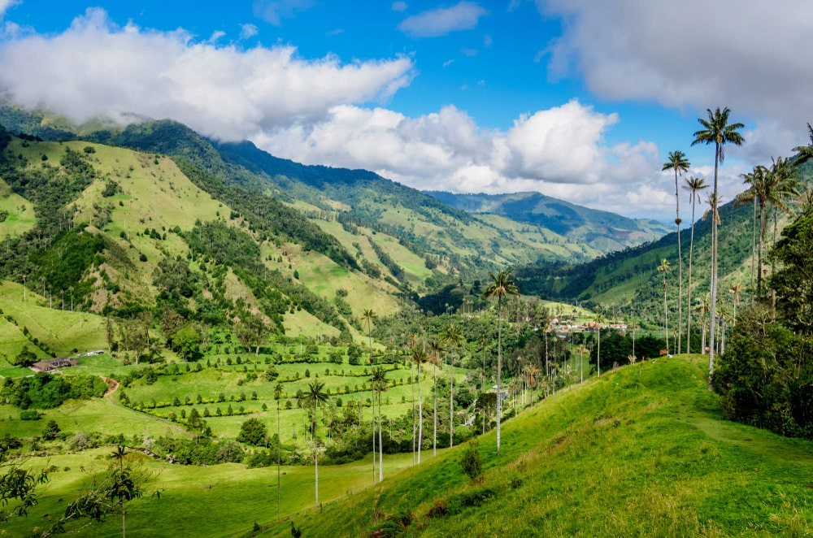
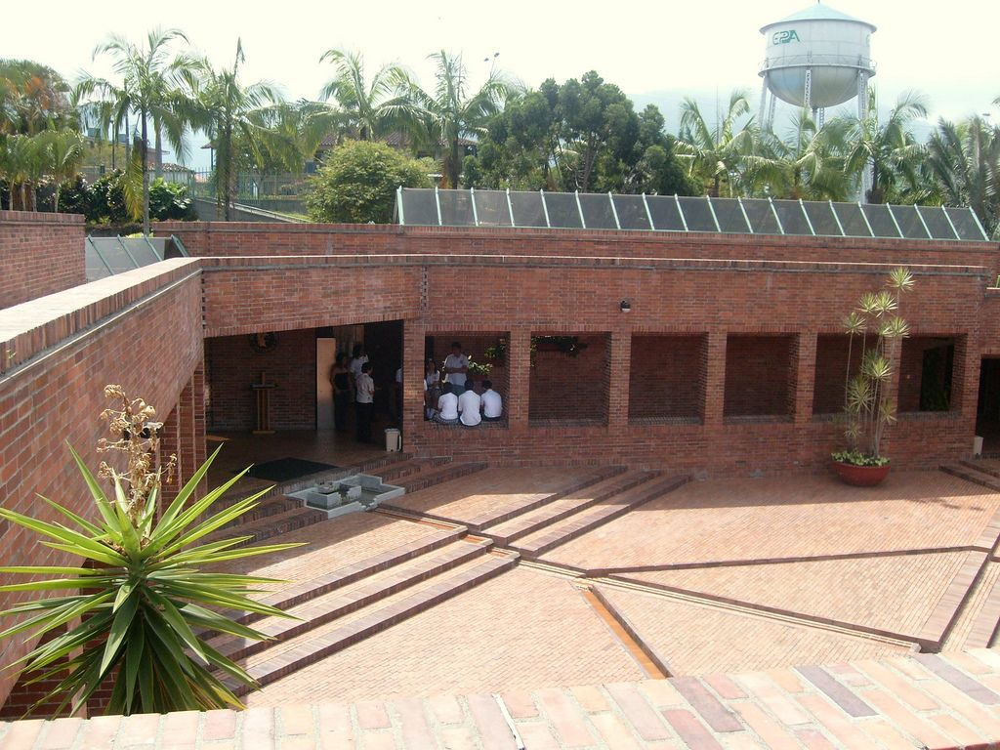

El Eje cafetero es una parada casi que obligatoria para el viajero extranjero, dado a que es una de los lugares turísticos más conocidos de Colombia. Esto se debe a la región en sí, donde se produce la mayor cantidad café colombiano, el producto por excelencia del país; Además se puede encontrar paisajes hermosos, los cuales se combinan con la arquitectura de la región de forma armoniosa. La región en si es una combinación entre la cultura paisa y valluna, creando así una identidad propia de la región. Aquí recopilamos algunos de los lugares característicos de la región:
El parque del café es un parque temático que se encuentra situado en el corregimiento de Pueblo Tapao, del municipio de Montenegro en Quindío, Colombia. Disponiendo de dos teleféricos para adentrarse en el parque; además cuenta con shows, atracciones y comida basados en el café. La construcción del mismo fue inspirada en la arquitectura folclórica colombiana.
Fue fundado en el año 1995 por la Federación Nacional de Cafeteros de Colombia y el Comité Departamental de Cafeteros del Quindío, actualmente pertenece a la fundación parque de la cultura cafetera que se ocupa a la preservación de la cultura cafetera de la región. El parque transmite la cultura del café y las costumbres de la gente de la región.
Conocido por alta variedad de flora y fauna, el valle de Cocora alberga algunas de las poblaciones de árbol nacional en Colombia, siendo la más resaltante la palma de cera del Quindio, actualmente todas las especies se encuentran bajo protección bajo el estatus de parque nacional natural. El parque recibe su nombre gracias a una princesa Quimbaya, la cual era hija del cacique Acaime, y cuyo significado es “estrella del mar”.
El valle se ubica entre los cursos altos del rio Quindio, el principal curso fluvial del departamento homónimo, a una altura entre los 1800 y los 2400 metros sobre el nivel del mar. El valle está ubicado a una distancia de 24 kilómetros al noreste de la capital departamental, Armenia, en jurisdicción del municipio de Salento.
Ubicado en Armenia se encuentra el museo del oro del Quimbaya, el cual es un homenaje a los antiguos pobladores de la región, quienes se caracterizan por la forma en que crearon su arte en base a su orfebrería y a la cerámica. Este museo es de entrada gratuita y se puede recorrer una y otra vez. En julio de 1986, el Banco de la República puso al servicio de los quindianos su Museo del Oro Quimbaya. El edificio, diseñado por el arquitecto Rogelio Salmona y construido por la firma Fajardo Molina.
